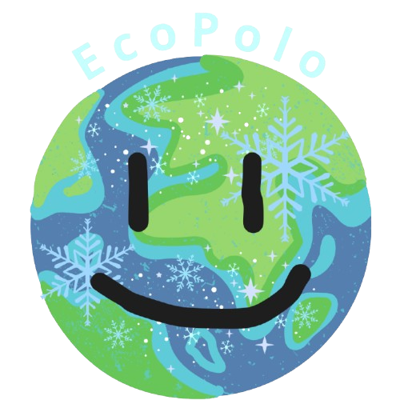
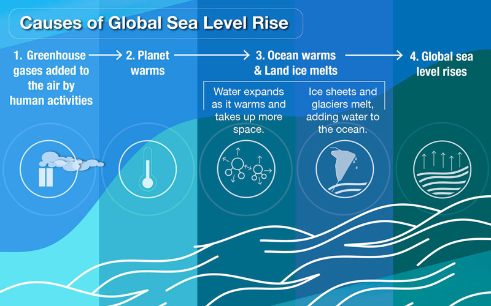

Degelo das calotas polares
O aquecimento do ar e dos oceanos reduz geleiras e mantos de gelo da Groenlândia e da Antártida. O gelo terrestre que chega ao mar contribui para a elevação do nível dos oceanos.

O projeto Aquecimento Global & Polos explica como o aumento da temperatura média do planeta acelera o degelo, modifica os oceanos e ameaça ecossistemas. O foco está nas regiões polares, mas os efeitos chegam a comunidades costeiras e à vida de todos nós.

O IPCC estima que, entre 2011 e 2020, a temperatura média da superfície do planeta ficou cerca de 1,1 °C acima do período de 1850 a 1900.
“As atividades humanas causaram inequivocamente o aquecimento global.” IPCC, 2023
Esse dado ajuda a entender por que reduzir emissões é importante: quanto maior o aquecimento, maiores tendem a ser os riscos para o gelo, os oceanos e as comunidades.
O aquecimento do ar e dos oceanos reduz geleiras e mantos de gelo da Groenlândia e da Antártida. O gelo terrestre que chega ao mar contribui para a elevação do nível dos oceanos.
Além da perda de gelo continental, a água do mar se expande quando aquece. A combinação dessas mudanças aumenta riscos de erosão, alagamentos e intrusão de água salgada em áreas costeiras.
A redução do gelo marinho altera habitats e o acesso a alimento. Ursos-polares dependem do gelo do Ártico para caçar; pinguins vivem no Hemisfério Sul e também enfrentam mudanças no ambiente e na disponibilidade de presas.
A ODS 13 propõe enfrentar a mudança do clima. A ODS 14 busca conservar os oceanos e seus recursos. As duas se conectam na proteção das regiões polares e da vida marinha.